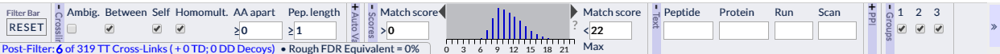

At the bottom of the xiView results visualisation page are a bar of controls for filtering the data. Working from left to right, these fall into the following subsections:
Each subsection is collapsible / re-expandable by clicking on the name of the sub-section. This allows filters of interest to be viewed without being pushed off the edge of the display.
A summary line at the very bottom of the window describes the effect of the current filtering state on the cross-link data set, and a button is also available to reset the filter state.
It is important to be aware that the filter operates conjunctively i.e. a match / cross-link must pass all the filters set here to become visible.
This sub-bar, comprised of two radio buttons: 'Manual' and 'FDR', only appears if unvalidated cross-links have been loaded as well. 'Manual' is selected by default and means the following other sub-bars are available in the filter bar: 'Cross-link positional categories', 'Score Cut-off' and 'Match attributes'. Selecting 'FDR' replaces the 'Cross-link positional categories' and 'Score Cut-off' sub-bars with the FDR sub-bar; the 'Match attributes' sub-bar remains in place.
These controls allow including or excluding categories of cross-links which are defined on the basis of link position. These categories are:
Radio buttons that allow all matches, only those where the 'pass threshold' attribute (as read from the uploaded data) is true, or only those where it is false. This section appears in the Public version of XiView.
A set of checkboxes that pass or filter out cross-links based on their manually assessed quality (A, B, C and ?), or their algorithmically assessed quality (AUTO), or their validation status (Unval. = unvalidated). This section only appears in the Rappsilber Lab version of the interface as it depends on specialised output from XiSearch.
This sub-section allows upper and/or lower score cut-offs for the matches to be set. These is done by entering text in the input fields or dragging on the histogram to set and move a range slider.
Note that the contents of the score histogram shown here is not affected by other filter settings; to see a histogram of scores post-filtering open the Histogram View.
When the FDR mode is selected, this sub-bar allows a basic link-level FDR threshold to be set. Matches that do not pass the threshold are filtered out. Five pre-set levels are provided (1, 5, 10, 20, and 50%) along with an open-entry input for other values. FDRs are reported separately for within and between protein cross-link sets.
A number of text boxes that allow matches to be filtered based on the contents of some of their attributes.
'Peptide' filters to matches that include the entered text string as part of either of the linked peptide sequences, e.g. 'FAKR' would filter to matches where one of the linked peptides includes the subsequence FAKR. Separating two strings with a hyphen will filter to matches where one peptide includes one subsequence and the second one the other, e.g. 'FAKR-KK' will filter to matches where FAKR is in one peptide and KK in the other.
'Protein' takes in a comma separated list of values that are text matched against protein descriptions and names. Matches that don't link such proteins are filtered out. A hyphen can be used to specify matches that link two particular proteins or sets of proteins. E.g., "ALBU" would show matches that involve a protein containing the text 'ALBU' in its name or description such as ALBU-HUMAN. "BOVINE-CHICK" would filter to all matches that connect proteins where one protein contains 'BOVINE' and the other 'CHICK'. "ALBU, BOVINE-CHICK" would additively combine the previous two scenarios.
'Run' filters out matches whose 'Run' attribute does not contain the entered text as a sub-string.
'Scan' filters out matches whose 'Scan' attribute does not match the exact number entered here.
'Residue Pairs per PPI' sets a threshold on the number of distinct matches between pairs of proteins that needs to be met before those matches are shown. This can be useful for quickly filtering out weakly interacting protein-protein pairs, and can tidy up the XiNet view in particular.
If multiple searches are being visualised together, the 'Groups' section will be visible. Within this are checkboxes for each of the search group numbers defined by the user back on the history page. Unchecking will remove all matches that belong to a particular search group.
In the bottom left of the screen is summary information on the number of cross-links that passed the filter. If decoys were included in the uploaded data then totals will be provided for the number of target-target, target-decoy, and decoy-decoy cross-links passing the filter. For info, an 'apparent link-level FDR' is displayed based on these totals if the FDR mode and value has not been explicitly set.
Finally, in the leftmost position of the filter bar is a button marked 'Reset'. Double-click this button to reset the filter to its initial state. If the search was loaded with a URL that included preset filter values it will reset back to these values.